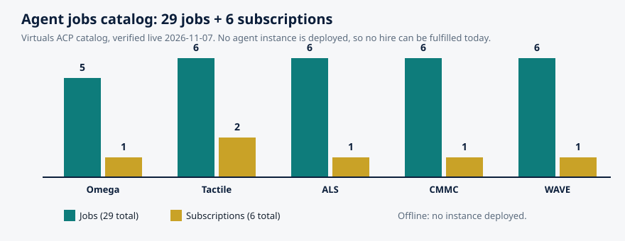

Article 64 · Intelligence & Mind · AGI Future Foundation
Who Gets to Be an Expert? How Knowledge Is Verified
Every hard decision eventually comes down to a person in a room, or on a call, saying: I know this field, and here is what I think. The person may be a surgeon, a former supply-chain executive, a retired regulator, or a researcher who has spent twenty years on one narrow problem. The question the rest of us face is the same in every case: how do you know they know?
InfoGurus (W3 Series 33) — Article 2 of 3 — Long-form, staged locally for the AGI Future Foundation article program. November 2026.
Illustration: expertise is a conversation with rules, not a title. Generated illustration, not a photograph.
The expert in the room
Every hard decision eventually comes down to a person in a room, or on a call, saying: I know this field, and here is what I think. The person may be a surgeon, a former supply-chain executive, a retired regulator, or a researcher who has spent twenty years on one narrow problem. The question the rest of us face is the same in every case: how do you know they know?
It is a harder question than it looks, because the signals people use to judge expertise are easy to fake and hard to calibrate. A confident manner is not knowledge. A prestigious affiliation is not knowledge, though it is evidence about where knowledge was once tested. A large following is not knowledge. Even a long career is ambiguous evidence: twenty years of experience can mean twenty years of learning, or one year of learning repeated twenty times. And the stakes of getting it wrong are not abstract. In medicine, a wrong expert answer harms a patient. In finance, it moves money. In public policy, it shapes law. The systems this article describes, peer review, encyclopedia verifiability, and expert-network compliance, are three different answers to the same question, built by three different communities, and each one is honest about its own limits in a way that is worth copying.
The reason this matters for InfoGurus is straightforward. The proposed Series 33, as the existing site article describes it, could take several shapes, and one of the most plausible is an expert network: people, or agents, that know things and help others find and use what they know. But an expert network that cannot say how it vets its experts, how it handles conflicts of interest, and how it corrects a wrong answer is not a knowledge service. It is a phone book with pretensions. Before any such network could be built, someone would have to write down, in public, what counts as an expert, who decides, and what happens when the expert is wrong. This article assembles the existing answers to those questions, from the institutions that have spent decades refining them.
Peer review: the slow machine that science trusts
The oldest and most studied verification system is scholarly peer review. In its standard form, a researcher submits a manuscript to a journal, an editor checks it for scope and basic quality, and then sends it to two or three reviewers with appropriate knowledge, methodological expertise, and experience, who assess its quality, rigour, and publishability. The reviewers' feedback helps the editor decide whether the manuscript is rejected, accepted, or needs revision. That description comes from a published overview of the process in PMC, "Peer review and the publication process", and it is worth reading in full because the boring parts are the point: the system is a sequence of gates, each operated by a different person, and no single person decides alone.
The history is longer than most people assume. The first record of editorial pre-publication peer review dates to 1665, when Henry Oldenburg, the founding editor of Philosophical Transactions of the Royal Society, arranged for manuscripts to be reviewed before publication. But the present-day system, with external reviewers as a matter of routine, did not become commonplace until the mid-twentieth century, according to the Wikipedia overview of scholarly peer review. That timeline matters, because it means peer review is not a timeless law of science. It is a relatively recent institutional invention, and it is still being argued about, which is exactly what you would expect from a system that works well enough to keep and badly enough to criticize.
The criticisms are serious and should be stated plainly. Peer review has failed to prevent the publication of invalid research and scientific fraud. Its outcomes correlate weakly with the future impact of a paper, as measured by citations. It is slow, and it lacks accountability, because reviewers are usually anonymous and their reports are usually unpublished. A Cochrane review found little empirical evidence that peer review ensures quality in biomedical research, and a second systematic review and meta-analysis found a need for evidence-based peer review in biomedicine given the paucity of assessment of the interventions designed to improve the process. Those findings are reported in the scholarly peer review overview, and a reader who wants to rely on them should trace them to the Cochrane review and the meta-analysis themselves. The point here is not to settle the debate. It is that the debate is public, the evidence is cited, and the system is judged by its results rather than its intentions. That is the standard any new verification system should be held to, including a proposed one.
There are also different kinds of peer review, and the differences are load-bearing. In single-blind review, the author does not know the reviewers' identities, but the reviewers know the author's name and institution. In double-blind review, neither side knows the other, and in some fields it is called dual-anonymous review. In open review, identities are disclosed and reports may be published. In post-publication review, the paper is published first and reviewed in the open afterwards. Each variant trades one risk for another: anonymity protects a junior reviewer who must criticize a senior author, but it also shields a careless or biased reviewer; openness creates accountability, but it can chill honest criticism. The UK Parliament's Science and Technology Committee report on peer review in scientific publications sets out these types and the evidence for each, and its central observation still holds: peer review varies considerably between scientific disciplines and is not a one-size-fits-all process. It has evolved to meet the needs of individual scientific communities.
What peer review gets right, for all its flaws, is the separation of roles. The author does not choose the reviewers. The reviewers do not make the final decision; the editor does. The editor is accountable to the journal's board and, ultimately, to the field. And the whole process leaves a record: a submission date, a decision, a revision, a publication. That record is what makes science corrigible. A wrong paper can be retracted, a flawed method can be challenged, and the correction is itself published.
Wikipedia: verification without experts
Wikipedia is the strangest verification system ever built at scale, and the most instructive, because it works without the thing the other systems depend on: credentialed experts. Anyone can edit it. No editor needs a degree, a license, or an institutional affiliation. And yet it functions, most of the time, as a usable reference work. Understanding how is essential to understanding what verification can mean when expertise is distributed rather than certified.
The answer is in three core content policies, which work together: neutral point of view, no original research, and verifiability. The verifiability policy states the rule in its nutshell: readers must be able to check that any of the information within Wikipedia articles is not just made up. All material must be attributable to reliable, published sources, and quotations and any material challenged or likely to be challenged must be supported by inline citations. Verifiability means that other people using the encyclopedia can check that the information comes from a reliable source. Wikipedia does not publish original research, and its content is determined by previously published information rather than the beliefs or experiences of its editors. Even if you are sure something is true, it must be verifiable before you can add it.
That last sentence is the radical one. Truth is not enough. Verifiability is the standard, and the burden of demonstrating it lies with the editor who adds or restores material, satisfied by providing an inline citation to a reliable source that directly supports the contribution. Articles must be based on reliable, third-party, published sources with a reputation for fact-checking and accuracy, and unpublished material is not considered reliable. If reliable sources disagree, the article must maintain a neutral point of view and present what the various sources say, giving each side its due weight.
The no original research policy adds the second half of the discipline: Wikipedia articles must not contain original thought, and must not contain any new analysis or synthesis of published material that reaches or implies a conclusion not clearly stated by the sources themselves. An editor may not combine two reliable sources to advance a novel position. The encyclopedia reports what published sources say. It does not decide what they mean together.
This is a deliberately humble design, and its humility is its strength. Wikipedia does not claim its editors are experts. It claims its articles are checkable. That is a weaker claim than "this is true," and a more useful one, because a reader can test it: follow the citation, read the source, and decide for yourself. It is also a design with known failure modes. Articles on obscure topics may have few watchers and poor sourcing. Articles on contested topics attract edit wars and require administrators to enforce the policies. A citation can be real but misrepresent its source, and a reader who does not follow it will not notice. But the failure modes are visible, and the correction mechanism is public: every edit is logged, every talk page records the argument, and every reader can see the history.
For a proposed information series, Wikipedia's lesson is that you do not need to certify experts to build a checkable record. You need a rule that every claim carries a source, a rule that the source must be published and reliable, and a public log of changes and corrections.
Expert networks: expertise as a service, with compliance attached
Peer review and Wikipedia verify documents. Expert networks verify people, and they do it under a constraint the other systems do not face: their product is a conversation, and a conversation leaves no published record to check. An expert network is a research service that connects businesses, investors, and consulting firms with vetted industry specialists, former executives, technical experts, and subject-matter professionals for direct, time-bound consultations to support informed decision-making. That definition, from the Nexus Expert Research buyer's guide, is accurate, and the phrase "time-bound" carries more weight than it appears to: a typical consultation lasts thirty to sixty minutes, and the value of the call depends entirely on whether the right person is on the other end.
The largest networks are old by internet standards. GLG, the Gerson Lehrman Group, was founded in 1998 and is one of the longest-established and largest expert networks, with a network of approximately 1.2 million vetted professionals, according to the same buyer's guide. Guidepoint fields a network of more than 2 million vetted experts. Those numbers are self-reported by the networks and repeated by industry guides; they describe the size of a database, not the quality of any single call, and a reader should treat them as the networks' own claims, not as independent verification.
What matters more than size is the vetting and compliance machinery, because that machinery is where an expert network earns or loses trust. The Silverlight Research expert network buyer guide sets out what institutional buyers look for: documented procedures covering identity verification, employment history, role relevance, and conflict screening, with the level of human review versus automated matching examined during vendor due diligence. Compliance, the guide says, is a primary consideration, evaluated on the network's ability to prevent material non-public information exchange, manage conflicts of interest, and maintain audit trails. Key controls include expert onboarding attestations, call-level compliance reminders, restricted topic lists, and post-call monitoring.
GLG's own published compliance framework shows what those controls look like in practice. Its compliance policies for council members require every network member to complete a tutorial and sign binding terms before participating in a project. The terms require members to discuss only matters they are permitted to discuss, to abide by the network's compliance rules, and to terminate immediately any consulting project that moves into subject matter they cannot discuss. Members must honor their obligations to employers or third parties, and GLG systematically asks members to disclose restricted subjects, storing the information in a disclosure management system to help block future projects on restricted subjects. Employees of a company may not consult about their own company, and may not consult with known competitors of their company. Calls are typically recorded for compliance and quality purposes, which is standard practice across the major networks, including AlphaSights, Guidepoint, and Third Bridge.
The comparison of expert networks at ExpertNetworks.net adds the details that separate one network's compliance posture from another's: AlphaSights employs more than 60 legal and compliance professionals across nine cities providing round-the-clock coverage, with automated risk profiling for every interaction and background checks including bankruptcy, political affiliation, and criminal conviction screening. Third Bridge custom-sources and background-checks all experts and prohibits self-referred experts. Guidepoint uses multi-layer advisor vetting including compliance tutorials, conflict-of-interest checks, and ongoing monitoring, with a client dashboard for compliance personnel to audit interactions. Cooling-off periods for public-company employees are enforced as standard practice. These are the networks' own descriptions of their controls, reported by an independent comparison site, and they should be read as claims about process, not as guarantees about any individual call.
The most important concept in this machinery is material non-public information, MNPI: confidential information about a company that has not been made public and that a reasonable investor would consider important. An expert who discloses MNPI on a call, even casually, can expose the expert, the network, and the client to legal liability, including insider trading exposure. That is why the compliance framework exists, and why it is enforced before, during, and after the call: pre-call screening asks the expert to confirm no conflicts of interest or MNPI exposure on the specific topic; call-level reminders restate what cannot be discussed; post-call monitoring flags calls that drifted into sensitive areas. The Nexus guide describes the standard six-step flow: the client submits a research brief; the network matches from a database or recruits custom experts; compliance screening checks for conflicts and MNPI restrictions; a pre-call briefing outlines what can and cannot be discussed; the consultation takes place; and the engagement is documented.
There is a lesson here that applies well beyond finance. Any system that connects a questioner with an expert needs three things the networks learned to build: a written statement of what the expert may not say, a check performed before the conversation rather than after it, and a record of the conversation that can be audited. A proposed information series that skipped any of the three would be weaker than the commercial networks that already exist, and it would have no excuse, because the model is public and the failure modes are documented.
The honest use of an expert network is triangulation: several experts, several angles, and a written record of where they agreed, where they disagreed, and what none of them could confirm. That discipline, triangulation plus a record, is the same discipline Wikipedia applies to sources and peer review applies to manuscripts. The institutions differ. The habit is the same.
Systematic reviews: when the expert is the literature
There is a fourth verification system, and it is the one that handles the case where individual experts disagree with each other. A systematic review does not ask one expert what they think. It asks a defined question, searches the entire published literature for studies that address it, assesses each study's quality against pre-stated criteria, and synthesizes what the studies say together. Cochrane, the international network that produces systematic reviews of health interventions, is the best-known practitioner of this method, and its reviews are widely treated as the highest standard of evidence in medicine precisely because the method is written down before the answer is known: the question, the search strategy, the inclusion criteria, and the analysis plan are all specified in advance, so the reviewers cannot quietly change the question to fit the answer they found.
The relevance to a proposed information series is direct. Most hard questions do not have one expert with the answer. They have a literature, and the literature disagrees with itself. A service that reports the loudest expert, or the most recent paper, or the study that confirms what the client wanted to hear, is not informing anyone. It is selecting. A service that reports what the literature says, with the disagreements intact and the quality of each study assessed, is doing something much harder and much more useful. It is also doing something that can be checked: a reader can repeat the search, read the included studies, and see whether the synthesis is fair.
This is also where the limits of peer review return in a new form. A systematic review is only as good as the studies it includes, and if the underlying literature is biased, for example because negative results were never published, the review inherits that bias. The discipline is not a guarantee of truth. It is a guarantee of method: the question was stated, the search was documented, the exclusions were justified, and the synthesis can be audited.
Credentials, experience, and the question nobody can dodge
All four systems circle the same underlying question: what makes someone worth listening to? The honest answer is that there is no single credential that settles it, and every proxy has a failure mode. A degree certifies that a person passed an examination at a particular time. A license certifies that a person met a regulator's requirements and has not yet lost the license. A publication record certifies that a person's work survived peer review at least once. A job title certifies that an employer trusted the person with a role. None of these certifies that the person is right about the specific question in front of them, today.
Experience is the most commonly cited proxy, and the most ambiguous. A practitioner with twenty years in a field has seen patterns a newcomer has not, and can often recognize a situation faster than they can explain why. That recognition is real expertise, and it is the reason expert networks exist: some knowledge is tacit, learned by doing, and cannot be found in a document. But experience also accumulates blind spots. A practitioner who has always done things one way may not notice that the world changed. A former executive may describe the industry as it was when they left it, not as it is now. An expert's most recent experience is not always their most relevant experience, and the vetting question should be not "how long did you do this?" but "when did you last do this, in what context, and what has changed since?"
The practical answer is to use several proxies together, and to weight them by the decision at stake. For a question where a wrong answer is cheap and reversible, a single informed opinion may be enough. For a question where a wrong answer harms a person, moves money, or shapes policy, the standard should rise: a credential plus recent relevant experience plus a published record plus a conflict-of-interest disclosure plus corroboration from an independent source. That is a high bar, and it will sometimes mean saying "we cannot verify this yet," which is itself an answer, and a more honest one than a confident guess.
A proposed information series would need to write that bar down before it took its first question. It would need to say, for each kind of question, what evidence it requires before it answers, who checks the answer, and what happens when the answer turns out to be wrong. The existing site article on InfoGurus lists exactly this as an open question: what accuracy and sourcing standard would every claim carry, and how would corrections be published? The systems in this article are the raw material for answering it. None of them is perfect. All of them are public, documented, and argued about in the open. That is what makes them worth copying.
Four systems, side by side
| System | What it verifies | Who decides | Public record | Main weakness |
|---|---|---|---|---|
| Scholarly peer review | A manuscript's methods and findings | Editor, on reviewers' advice | Submission, revision, publication, retraction | Slow; weak evidence it guarantees quality; reviewer anonymity limits accountability |
| Wikipedia verifiability | Whether a claim is attributable to a reliable published source | Editors, enforcing three core policies | Every edit logged; talk pages public | Obscure topics poorly watched; citations can misrepresent sources |
| Expert networks | Whether a person is who they claim, and may speak on a topic | Network compliance staff, pre-call screening | Call recordings and audit trails (private, not public) | One opinion is not representative; MNPI and conflict risk on every call |
| Systematic review | What the whole literature says on a defined question | Reviewers, following a pre-registered protocol | Search strategy, inclusions, exclusions published | Inherits publication bias; only as good as the included studies |
The table is a summary of the sources cited in this article, not a ranking. No system wins on every dimension. Peer review is the slowest and the most thorough. Wikipedia is the fastest and the most checkable. Expert networks are the only system that delivers tacit, experience-based knowledge, and the only one whose record is private rather than public. Systematic review is the only system designed for the case where experts disagree. A serious information service would not choose one. It would say, for each kind of question, which system applies, and it would say so in writing, before answering.
A note on agents, and why it belongs here
Readers of this program will know that the Foundation's network includes five agents listed in the Virtuals Agent Commerce Protocol catalog, offering 29 jobs and 6 subscriptions between them: Omega (5 jobs, 1 subscription), Tactile (6 jobs, 2 subscriptions), ALS (6 jobs, 1 subscription), CMMC (6 jobs, 1 subscription), and WAVE (6 jobs, 1 subscription). That catalog is verified live, and the counts are exact. It is equally verified, and must be said in the same breath, that no instance of any of the five agents is online to fulfil a hire: no deployment exists, wallets are at zero, and no hire can be fulfilled today.
That matters for this article because a proposed expert network built on agents would face the verification question twice over. An agent is not an expert. It is a system that retrieves, summarizes, and drafts, and its output is only as good as its sources and its instructions. The Foundation's own studio model says so: agents prepare, humans execute, and agents never sign, move funds, hire, offer securities, or enact doctrine. A proposed InfoGurus expert network that used agents would need to record, per answer, which agent drafted it, which sources it relied on, and which human adopted it, exactly as the studio model requires for proposals. Until any such network exists, and until any agent is online, there is nothing to verify, and this article claims nothing.

Chart: the verified agent jobs catalog, 29 jobs and 6 subscriptions across five agents. Source: Virtuals ACP catalog, verified live 2026-11-07. No instance is online; no hire can be fulfilled today.
Glossary
- Peer review: Evaluation of a manuscript by experts in the same field, advising an editor on acceptance, revision, or rejection. Single-blind, double-blind, open, and post-publication are the main variants.
- Verifiability: The Wikipedia standard that material must be attributable to a reliable, published source, so that readers can check it. Truth alone is not enough.
- No original research: The Wikipedia rule that articles must not contain original thought or novel synthesis of sources. The encyclopedia reports published sources; it does not decide what they mean together.
- Material non-public information (MNPI): Confidential information about a company that has not been made public and that a reasonable investor would consider important. Expert networks prohibit its disclosure on calls.
- Conflict of interest: A situation in which an expert's obligations, employment, or financial interests limit what they may discuss, or bias what they say. Networks screen for it before every call.
- Cooling-off period: A period after leaving a company during which a former employee is restricted from consulting on that company or its competitors.
- Systematic review: A review that asks a defined question, searches the literature by a pre-stated strategy, assesses each study's quality, and synthesizes the results. Cochrane reviews are the best-known example in medicine.
- Publication bias: The tendency for studies with positive or striking results to be published more often than studies with negative or null results, which can distort any synthesis of the literature.
- Tacit knowledge: Knowledge learned by doing that is hard to write down, such as a practitioner's judgment about a situation. Expert networks exist largely to access it.
Frequently asked questions
Does peer review prove a paper is true?
No. Peer review is a quality screen operated by editors on reviewers' advice. It has failed to prevent invalid research and fraud, and a Cochrane review found little empirical evidence that it ensures quality in biomedical research. It is a filter, not a guarantee.
Can I cite Wikipedia in serious work?
Cite the underlying source, not the encyclopedia. Wikipedia's verifiability policy requires material to be attributable to reliable, published sources, so the citation at the end of the sentence is usually the source you need.
How do expert networks stop insider trading?
Through compliance machinery: identity and employment verification, conflict-of-interest screening, pre-call briefings on what cannot be discussed, a rule to terminate any call that moves into restricted territory, and call recording and post-call monitoring. The machinery is documented by the networks themselves; it is a control, not a guarantee.
What is the difference between an expert network and a consultancy?
A network connects a client with an individual expert for a time-bound conversation. It does not do the analysis, write the report, or take responsibility for the decision. The expert's view is qualitative and experience-based, not statistically representative.
Is InfoGurus an expert network?
Not today. InfoGurus (W3 Series 33) is proposed and planned, not formed, funded, or offered. An expert network is one of the lanes the existing site article names as a possibility, alongside a reference service, a research function, and a public information service. No lane has been chosen, and no experts have been vetted.
Can the Foundation's agents answer expert questions today?
No. The five agents' 29 jobs and 6 subscriptions are listed in the Virtuals ACP catalog, but no instance is online, so no hire can be fulfilled today. Any future agent role would operate under the studio model: agents prepare, humans execute.
Sources
- "Peer review and the publication process," PMC (Azam-Ali Watson) — https://pmc.ncbi.nlm.nih.gov/articles/PMC5050543/
- "Scholarly peer review" (Wikipedia) — https://en.wikipedia.org/wiki/Scholarly_peer_review
- UK Parliament, Science and Technology Committee, "Peer review in scientific publications" — https://publications.parliament.uk/pa/cm201012/cmselect/cmsctech/856/85605.htm
- Wikipedia, "Verifiability" — https://en.wikipedia.org/wiki/Wikipedia:V
- Wikipedia, "No original research" — https://en.wikipedia.org/wiki/Wikipedia:PRIMARY_SOURCES
- GLG, "Compliance Policies" for council members — https://membership.glgresearch.com/council-members/compliance-policies?lang=de
- Nexus Expert Research, "Top Expert Network Companies in 2026: Complete Buyer's Guide" — https://nexusexpertresearch.co/blog/top-expert-network-companies/
- Silverlight Research, "Expert Network Buyer Guide" — https://www.silverlightresearch.com/expert-network-buyer-guide.html
- ExpertNetworks.net, "Compare Expert Networks" — https://expertnetworks.net/compare/
- AGI Future Foundation, Article 03, "InfoGurus: Knowledge Organisation, Expertise, and Answers You Can Check" (local site file,
articles/article-03-infogurus.html). - Virtuals ACP catalog, verified live 2026-11-07: 29 jobs and 6 subscriptions across five agents (Omega 5+1, Tactile 6+2, ALS 6+1, CMMC 6+1, WAVE 6+1); no instance deployed.
- Foundation and Fellowship filing records, reviewed 2026-11-03 (Foundation Entity No. B20260196664; Fellowship Entity No. B20260229217).
Goals served: foundation-governance (written verification standards for any future information series), agent-monetization (the verified catalog stated exactly, with the offline status plain), foundation-funding (a credible verification standard is what a future donor would ask for first). Not a solicitation; nothing here offers securities or describes a donation as tax-deductible.
Series page: InfoGurus (S33). Related articles: How to Judge a Source (Article 63) · The Knowledge Graph as a Public Good (Article 65)
Contact
Questions about InfoGurus, or about the Foundation's work in this category, go to x@agifuturefoundation.org. Say who you are, what your interest is, and what you could contribute. A reply, if one comes, will come from a human. This page is not an offer of securities and not a solicitation of funds: no price, terms, or return is promised, and no funding is being sought for this series. Nothing on this page is legal, tax, or financial advice.